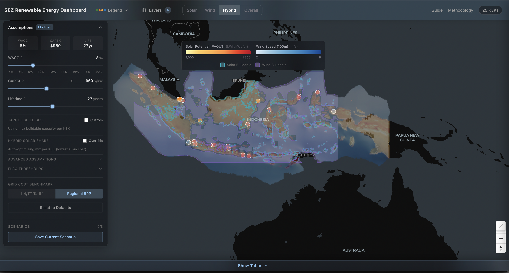

Modelling Template documentation¶
Welcome to the Modelling Template documentation!

An analytical model and interactive dashboard assessing renewable energy competitiveness across Indonesia’s 25 Special Economic Zones (KEKs). Computes solar and wind LCOE, grid integration costs, BESS storage requirements, CBAM exposure, and action flags under user-adjustable assumptions.
Built for development bank analysts, energy investors, and policy advisors.

Features¶
Analytical Model
Solar and wind LCOE via CRF annuity method with panel degradation and firming costs
Hybrid solar+wind optimization (sweeps blended mix to minimize all-in cost)
BESS storage sizing with bridge-hour model (round-trip efficiency, overnight gap)
5-layer geospatial buildability filter (forest, peatland, slope, land cover, road proximity)
Grid integration assessment (3-point proximity: solar site, substation, KEK)
EU CBAM exposure detection across 68/81 sites (nickel smelters, steel mills, cement plants, aluminium, fertilizer) with 2026–2034 cost trajectory. Scope 2 savings multiplied by
CBAM_RE_ADDRESSABLE_FRACTIONper sector (cement 0.12, fertilizer/ammonia 0.10, steel_bfbof 0.80, else 1.0) so RE cost relief reflects only the electric share of thermal-inclusive intensity values. Ammonia calibration (2.3 tCO₂/t Indonesia-specific Scope 1) wired in pending row ingestion (TODOS M28); petrochemical intentionally excluded per EU Annex I
Dashboard
Interactive map with 81 site markers (25 KEKs + 56 industrial sites across 5 sectors), color-coded by action flag
Solar PVOUT and wind speed raster overlays with buildable area polygons
Adjustable assumptions panel (WACC, CAPEX, lifetime, grid benchmark, BESS sizing)
Sortable/filterable scorecard table with CSV export
Per-KEK detail drawer with 6 analysis tabs
Quadrant chart, LCOE curve, energy balance, and RUPTL pipeline visualizations
5 guided walkthrough tours (one per persona)
Light, dark, and satellite map themes
Quick Start¶
# Backend
uv sync
cp .env_template .env # set MAPBOX_TOKEN for 3D terrain (optional)
uv run uvicorn src.api.main:app --port 8000
# Frontend
cd frontend
npm install
npm run dev
Open http://localhost:5173. The API loads pipeline data at startup (~10s), then the dashboard is ready.
Architecture¶
Data Pipeline (Python) API (FastAPI) Frontend (React + Vite)
---------------------- ---------------- -----------------------
GeoTIFF + PDFs + CSVs 7 REST endpoints MapLibre GL JS map
-> dim/fct star schema /api/defaults TanStack Table v8
-> outputs/data/processed/ /api/scorecard Recharts charts
/api/layers/{name} Zustand state
/api/kek/{id}/* Tailwind CSS
/api/methodology
Data Sources¶
Source |
What it provides |
|---|---|
PVOUT GeoTIFF (kWh/kWp/day) at 250m resolution |
|
Wind speed at 100m hub height |
|
Grid capacity pipeline by region |
|
ESDM Technology Catalogue 2023 |
Solar CAPEX, FOM, lifetime parameters |
PLN BPP 2023 |
Regional cost of supply (grid benchmark) |
Captive coal plants within 50km of each KEK |
|
Nickel smelters, process types, CBAM exposure |
|
OpenStreetMap |
Road network for buildability filtering |
Project Structure¶
src/
model/ Pure Python model (LCOE, action flags, GEAS allocation)
pipeline/ Data pipeline builders (dim_kek, fct_lcoe, fct_captive_coal, etc.)
api/ FastAPI backend (routes, scorecard recomputation)
dash/ Shared modules (data_loader, map_layers, logic, constants)
frontend/
src/components/ Map, panels, charts, table, UI components
src/store/ Zustand state management
src/lib/ API client, types, formatting utilities
tests/ 421 tests across model, pipeline, and API
notebooks/ Jupyter notebooks for exploration and data pipeline
docs/ Methodology, design specs, reference documents
data/ Input data (GeoTIFFs, GeoJSON, shapefiles)
outputs/ Pipeline output CSVs
Documentation¶
Document |
Description |
|---|---|
Plain-language project overview |
|
LCOE formulas, PVOUT conversion, action flag logic, GEAS allocation |
|
Every column in every pipeline table with source attribution |
|
System diagram, pipeline dependency graph, design decisions |
|
Dashboard UX spec, component architecture, color system |
|
User journeys for 5 target personas |
Testing¶
uv run pytest tests/ # 421 tests
uv run ruff check src/ tests/ # Python lint
cd frontend && npm run lint # TypeScript lint (Biome)
cd frontend && npx tsc --noEmit # Type check
License¶
MIT License with Commons Clause. Free to use, modify, and redistribute with attribution. Commercial resale of the software itself is restricted.
Citation¶
If you use this software or dataset in your research, please cite:
@software{barca2026sez,
author = {Barca, Shaan},
title = {SEZ Renewable Energy Dashboard},
year = {2026},
version = {1.0.0},
doi = {10.5281/zenodo.19570542},
url = {https://doi.org/10.5281/zenodo.19570542}
}
Best Practices
API Reference